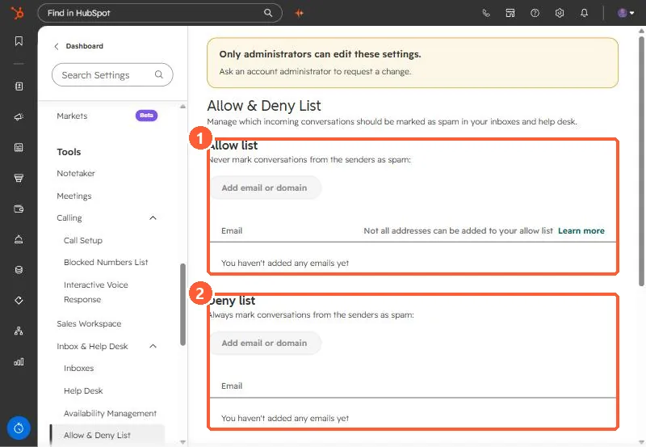

Short answer
In Settings, Inbox & Help Desk, Allow & Deny List, the Allow list never marks a sender as spam and the Deny list always does. You can also mark categories automatically: automated responses, marketing emails, role-based addresses such as support@, and emails with unsubscribe links. HubSpot says not every address can be allowed, and emails sent from your own HubSpot account, such as workflow emails, are always marked as spam.
1. The lists
Open Allow & Deny List. Both are empty in my demo.


2. Automatic spam categories
- Automated response emails.
- Marketing emails from tools such as HubSpot or MailChimp.
- Role-based emails (marketing@, support@, noreply@).
- Emails with unsubscribe links.
The page notes marketing, role-based, and subscription link emails from existing contacts are never marked as spam.
3. Rules you cannot override
- Emails from your connected team address to itself are spam, to prevent loops.
- Emails sent from your HubSpot account, such as workflow emails, and replies that start new threads from them are spam.
- Emails from noreply@hubspot.com are spam.
To release one, open the Spam view and click Mark as not spam.